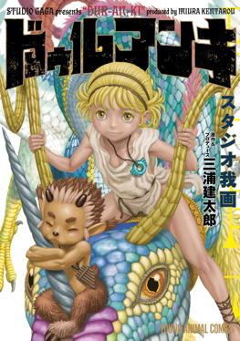
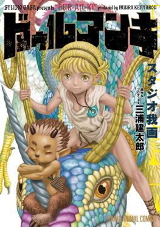

HIS MANGA CARRIER
The best manga ever, Berserk, first appeared in 1988. This version is what we now call Berserk: The Prototype - a 48 paged manga that won Miura a prize from a Manga School.Not long after this, he finished his doctorate in 1989 and began another manga called Ourou, otherwise known as King of the Wolves.
In 1990, there were more releases to follow up on Ourou called Ourou Den (Legend of the Wolf King). That same year, Japanese Animal House also released the first ever publication of Berserk, which did not begin to gain traction until the Golden Age Arc.
In 1992, he started the manga Japan with Okamura, which appeared in Animal House that year with stand alone manga volumes released the following year.

 
